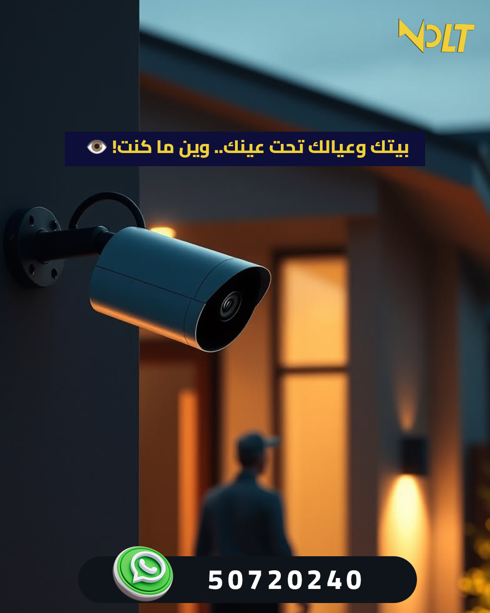
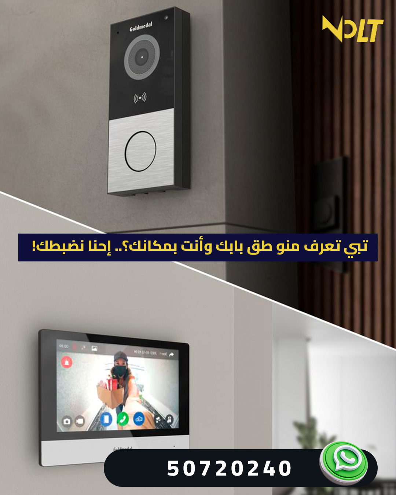
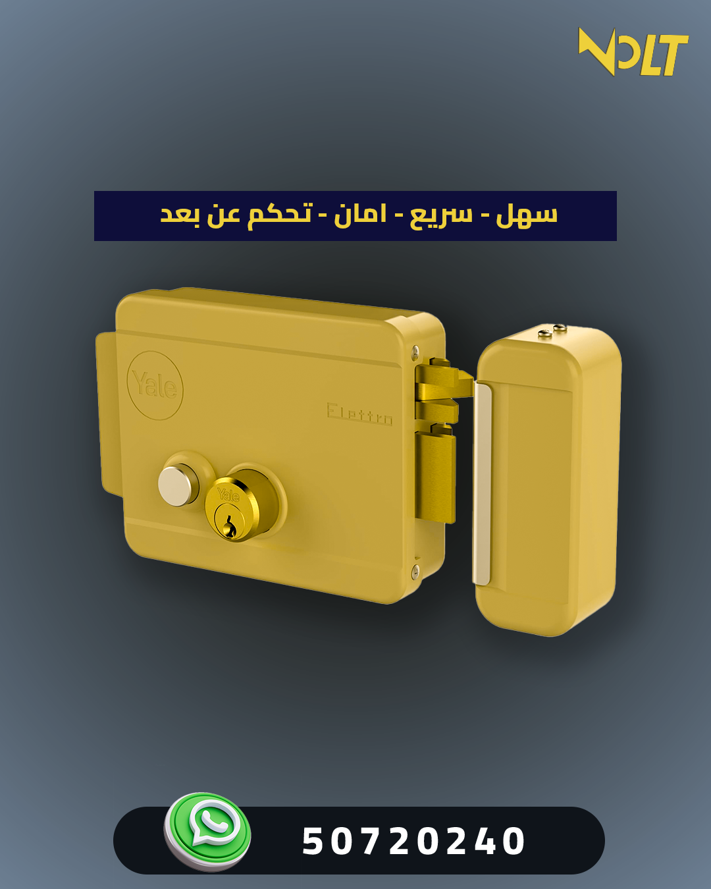
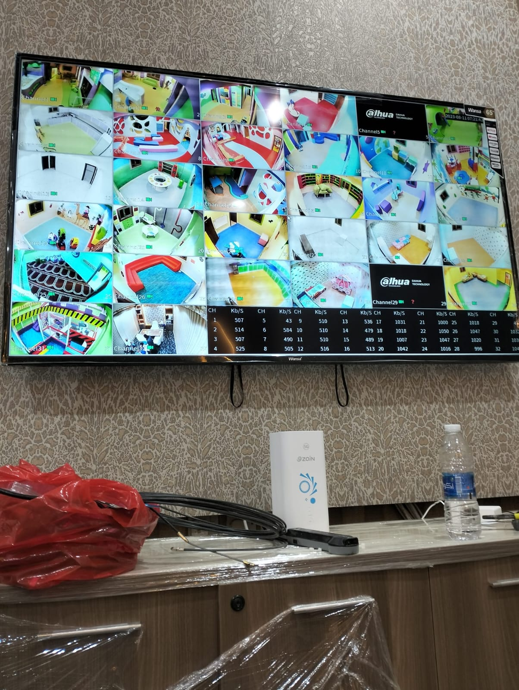
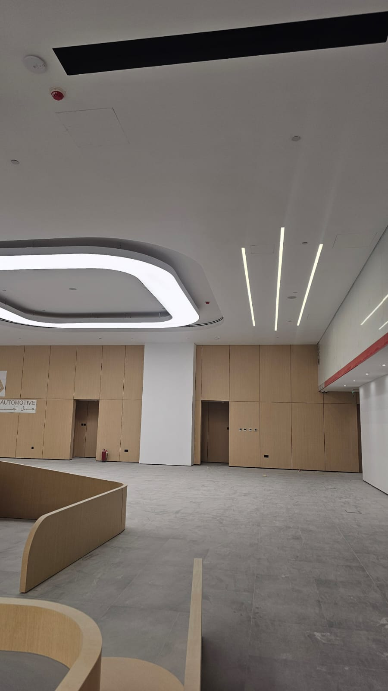

📷
تركيب وصيانة كاميرات المراقبة
تركيب كاميرات داخلية وخارجية، أنظمة DVR/NVR، مشاهدة عبر الهاتف، وصيانة الأعطال وضعف الصورة وانقطاع التسجيل.
نقدم حلول أمنية وكهربائية للمنازل، الفلل، المحلات، المكاتب، المخازن، والشركات. تواصل معنا الآن واحصل على معاينة أو استشارة مناسبة لاحتياجك.

ننفذ الخدمة من المعاينة حتى التركيب والتشغيل والمتابعة.
تركيب كاميرات داخلية وخارجية، أنظمة DVR/NVR، مشاهدة عبر الهاتف، وصيانة الأعطال وضعف الصورة وانقطاع التسجيل.

تركيب انتركام صوتي ومرئي للمنازل والعمارات والمكاتب مع صيانة الأعطال وربط الأنظمة بالأبواب.

تركيب أقفال كهربائية وربطها بالهاتف والانتركام للتحكم في فتح وغلق الباب بطريقة آمنة وسهلة.

تركيب وصيانة بوابات كهربائية للمنازل والفلل والمواقف مع أنظمة تحكم ريموت أو هاتف حسب الحاجة.

فحص وإصلاح الأعطال الكهربائية، القواطع، التمديدات، الإنارة، ومشاكل انقطاع الكهرباء داخل المنازل والمنشآت.
غير متأكد من النظام المناسب؟ تواصل معنا وسنساعدك في اختيار أفضل حل حسب المكان والميزانية.
نماذج توضح جودة التنفيذ والتركيب المنظم لأنظمة الكاميرات والانتركام والكهرباء.

توزيع مناسب للكاميرات وربطها بالمشاهدة عبر الهاتف.

ربط الباب بالانتركام لفتح آمن وسهل.
فحص الأعطال وتنظيم التمديدات بشكل آمن.
هدفنا ليس مجرد تركيب جهاز، بل تسليم نظام يعمل بكفاءة وسهل على العميل استخدامه من الهاتف أو الانتركام أو لوحة التحكم.
تركيب منظم، تمديدات نظيفة، وتجربة تشغيل كاملة قبل التسليم.
نقترح النظام الأنسب حسب المكان، لا الأغلى فقط.
يمكنك طلب الخدمة مباشرة عبر الواتساب أو الاتصال.
نساعدك في التشغيل والمتابعة وحل الأعطال بعد التنفيذ.
يمكن تخصيص هذه الفقرة حسب الدولة أو المدينة التي تستهدفها في الإعلان.
نقدم خدماتنا للمنازل، الفلل، العمارات، المحلات التجارية، المكاتب، المستودعات، والمباني الإدارية. تواصل معنا لمعرفة إمكانية الوصول إلى منطقتك.
نعم، يمكن ربط نظام الكاميرات بالهاتف لمتابعة المكان عن بعد حسب نوع النظام والإنترنت المتاح.
نعم، يمكن ربط القفل الكهربائي بالانتركام بحيث يتم فتح الباب من شاشة الانتركام أو من الهاتف حسب النظام المستخدم.
نعم، نقوم بفحص الأعطال وصيانة الكاميرات والانتركام والبوابات الكهربائية حسب حالة النظام.
يمكن ترتيب معاينة أو استشارة لتحديد أفضل أماكن التركيب والنظام المناسب للموقع.
أرسل لنا نوع الخدمة، موقعك، وصورة أو فيديو للمشكلة إن وجدت، وسيتم الرد عليك في أقرب وقت.